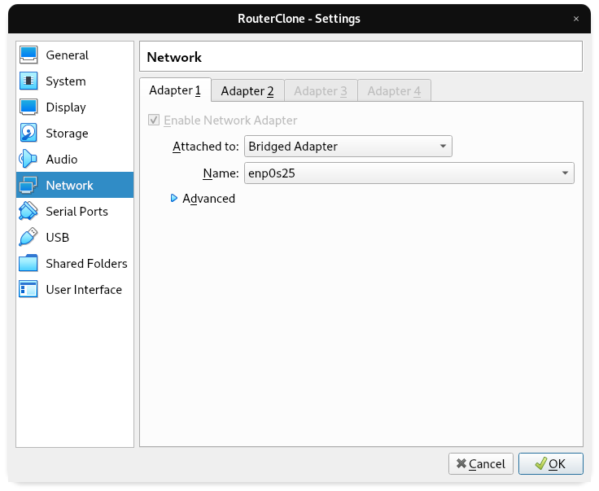

Assuming you are using a virtual machine, with a new clone created you will want to adjust the network adapters in the settings. To do so, ensure you have the instance you plan to use as a router selected and select setting at the top. Then click the network tab. Only Adapter 1 and 2 need to be enabled. Adapter 1 should be set to Bridged Adapter and Adapter 2 should be set to Internal Network.

To start, you need to edit the netplan config. It can be found in the /etc/netplan/ directory. For my machine, it was /etc/netplan/50-cloud-init.yaml. YAML is very specific about formatting. White space is done with spaces and does not allow for tabs. For the config, you must determine which ethernet connection is for WAN and for LAN. If using Virtual Box, the name of the connection seems to be consistant. In my case enp0s3 is used for WAN and enp0s8 is for LAN.
sudo nano /etc/netplan/50-cloud-init.yaml
Bellow is what the config file should look like
network:
ethernets:
enp0s3:
addresses: []
dhcp4: true
optional: true
enp0s8:
addresses: [10.69.69.1/24]
dhcp4: no
dhcp6: no
version: 2
I decided to go with the 10.69.69.0 network with the router at 10.69.69.1, but this can be adjusted as desired.
To ensure the config is working, enter the following command. If there is no output, it should have been successful.
sudo netplan apply
Next we are going to install the firewall.sh script. I will be showing how to get the file so using the wget command. I will also include a command that uses git. As a last resort, you could copy the written out file that will be down bellow.
wget https://docs.cymiller.tech/firewall.sh
git clone https://github.com/CyMiller757/firewallsh
#!/bin/bash
WAN_DEVICE=enp0s3
LAN_DEVICE=enp0s8
IPTABLES=/sbin/iptables
$IPTABLES -F
#echo 1
$IPTABLES -t nat -A POSTROUTING -o $WAN_DEVICE -j MASQUERADE
#echo 2
$IPTABLES -A FORWARD -i $WAN_DEVICE -o $LAN_DEVICE -m state --state NEW -j REJE$
#echo 3
$IPTABLES -A FORWARD -i $WAN_DEVICE -o $LAN_DEVICE -m state --state RELATED,EST$
#echo 4
$IPTABLES -A FORWARD -i $LAN_DEVICE -o $WAN_DEVICE -j ACCEPT
Now we will have to make the file executable. You can also move it if desired.
sudo chmod +x /path/to/firewall.sh
We are either going to create or change the rc.local file. If there is pre-existing code within the file, add the path to firewall.sh somewhere within
sudo nano /etc/rc.local
#!/bin/bash
/path/to/firewall.sh
exit 0
Lastly, ensure rc.local is executable
sudo chmod +x /etc/rc.local